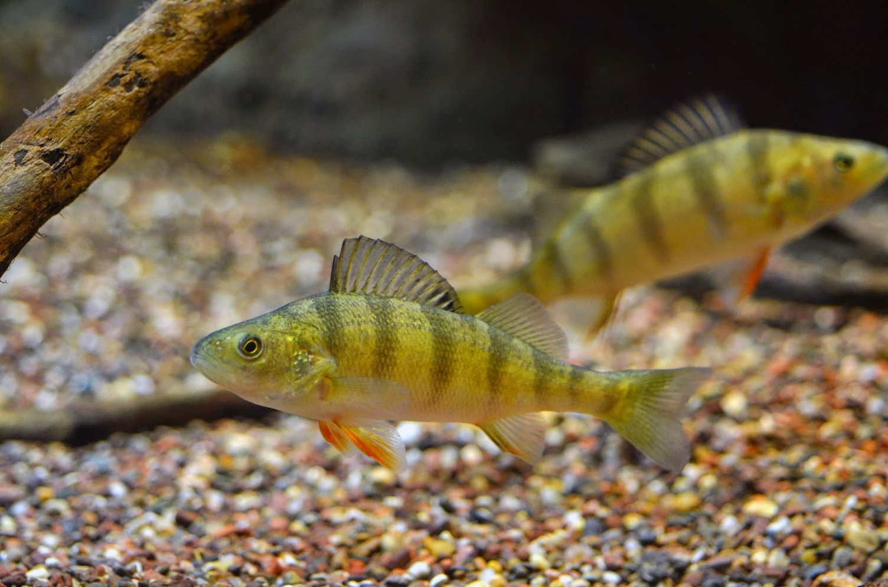
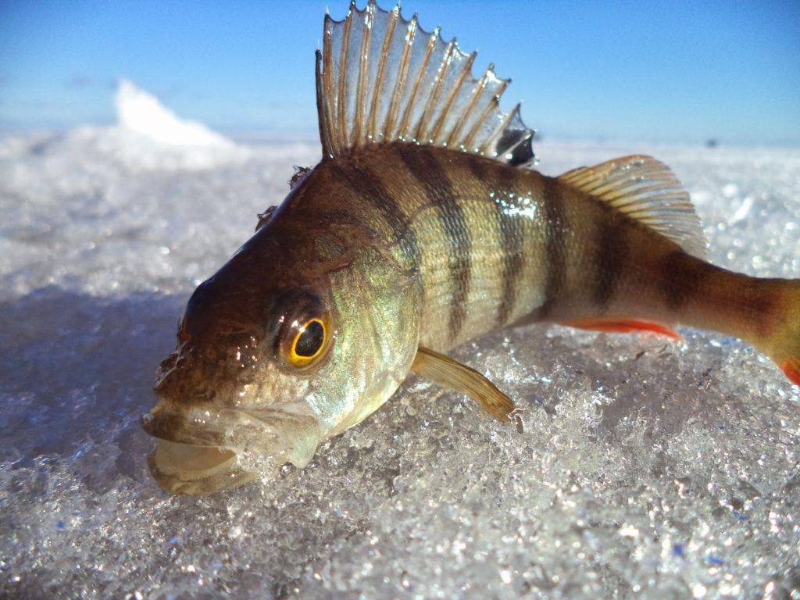

Речной окунь по праву считается одним из самых популярных объектов любительского и профессионального рыболовства. В отличие от других видов рыб, окунь практически не боится шума. Этот хищник отличается своей смелостью и жадностью. Пойманный окунь поначалу упорно сопротивляется, но очень быстро утомляется.
Ловят окуня при помощи разнообразных снастей: поплавочной удочки, спиннинга, донной удочки, дорожки, нахлыста, кружков, отвесных блесен и т.д. Самыми распространенными способами являются ловля на поплавочную (карповую) удочку, спиннинг, донку, а также подледный лов. Давайте подробнее рассмотрим все варианты.

Ловля на поплавочную удочку
Для поплавочной ловли окуня используется длинное удилище (4-7 м), оснащенное прочной леской диаметром 0,1 мм и крючком №15-20 (отечественная классификация). Тактика такой ловли заключается в активном поиске рыбы, ориентируясь, в основном, на места стайной охоты.
На поплавочную удочку окунь хорошо берется на следующие приманки: черви и мотыли, личинки ручейника, пиявки, опарыши. Иногда рыбу отдельно прикармливают мелким или крупным мотылем. Для ловли крупного окуня в качестве насадки также используют мелкую рыбу – уклеек, верховок и других. На растительные насадки (хлеб, тесто, манка и т.д.) окунь клюет крайне редко.
Ловля на спиннинг
В наше время очень популярна спиннинговая ловля окуня. Как правило, такая ловля не требует каких-то особых, дорогих снастей, хотя в поведении и реакции на приманки окунь намного разнообразнее других видов хищных рыб. Для спиннинговой ловли окуня самым подходящим вариантом будет удилище длиной 2-2,5 м среднего или быстрого строя с тестом до 10-12 г. Тест удилища – это максимально допустимая масса забрасываемой наживки. Леску лучше использовать плетеную. Если в реке водится щука, лучше добавить металлический (стальной) поводок.
В отличие от других пресноводных хищных рыб, для поимки речного окуня необходимо множество разнообразных спиннинговых приманок. Основные из них – воблеры, джиги и вращающиеся блесны. Воблеры и блесны обычно используют летом, а джиговые приманки, которые связаны со ступенчатой проводкой, будут более эффективными на осенней или зимней рыбалке, а также при ловле на большой глубине.
При ловле окуня на вращающиеся блесны основную роль играет размер насадки. На маленькие блесны, как правило, ловится мелкий окунь; на большие – крупный. При этом проводка блесны должна быть плавной и равномерной. Самой подходящей длиной воблеров считается от 3 до 8 см. Что касается джиговых приманок, здесь зачастую используют виброхвосты и твистеры. Также окунь хорошо берется на мягкие приманки, насыщенные различными ароматизаторами. Кроме того, в последнее время для ловли окуня часто используются разнесенные оснастки.

При ловле окуня на спиннинг менее эффективными будут колеблющиеся блесны, попперы, пилькеры, спиннербейты и джиг-спиннеры. Крупные колеблющиеся блесны можно использовать только для ловли крупного окуня или в малопосещаемых водоемах. Для хищника больше подойдут колеблющиеся блесны размером 3-4 см, на которые можно ловить в местах, заросших тиной, травой или водорослями. При использовании ступенчатой проводки маленькие пилькеры могут быть эффективными. А попперы и прочие поверхностные приманки практически не пользуются популярностью при спиннинговой ловле окуня. Джиг-спиннеры будут полезными при осенней береговой ловле, используя ступенчатую проводку. Применение спиннербейтов ограничивается их большими размерами, хотя в отдельных случаях оно может принести пользу.
Основными факторами, которые влияют на хватку окуня, считаются тип насадки и метод проводки. Цвет приманки играет уже второстепенную роль.
Ловля на донную удочку
На донную удочку окуня ловят обычно в тех случаях, когда в реке сильное течение или когда речь идет о ловле на большой глубине, вдали от берега. Самой подходящей снастью считается ходовая донка (пикер-квивертип). В отличие от карпа, окунь не возьмет насадку на донной снасти, если почувствует малейшее ее сопротивление. Троллинговую (дорожковую) ловлю карпа летом осуществляют на небольшой глубине с использованием мелкого воблера (зачастую совместно с вращающейся блесной). Зимой используют воблер с глубоким погружением.
Как и при спиннинговой ловле, ловля нахлыстом подразумевает использование разнообразных приемов: с грузилом и патерностером, на тонущие или плавающие мушки, «английским» методом и т.д. Кружки используют редко, однако они будут эффективными при ловле окуня в верхнем слое воды и на отмелях с выходом на глубину. На отвесную блесну окунь ловится с лодки или технических сооружений: плотин, мостов и т.д. В качестве приманки обычно используют зимние блесны и балансиры, а иногда колеблющиеся блесны, пилькеры, мягкие приманки, тонущие воблеры и джиговые приманки.
Подледная ловля
Разнообразные подледные способы ловли окуня пользуются широкой популярностью в зимний период в районах с устойчивым покрытием льда. Поэтому окунь считается самым популярным объектом зимней рыбалки.
В этот период хищник ловится на зимние удочки с мормышками и зимние блесна, в т.ч. балансиры. Зимой самый активный клев окуня наблюдается при появлении на речке первого льда, а также в конце зимы незадолго перед нерестом.